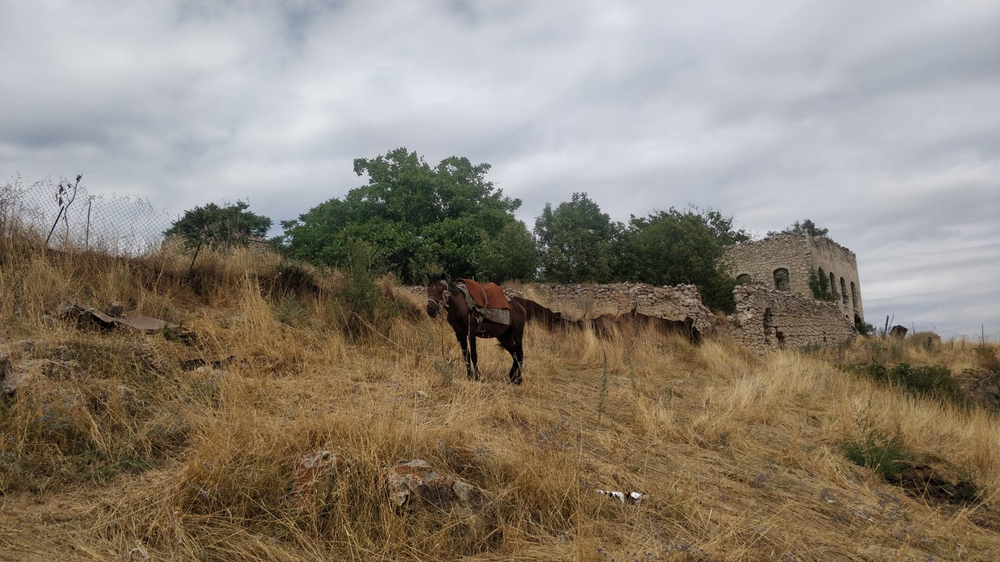
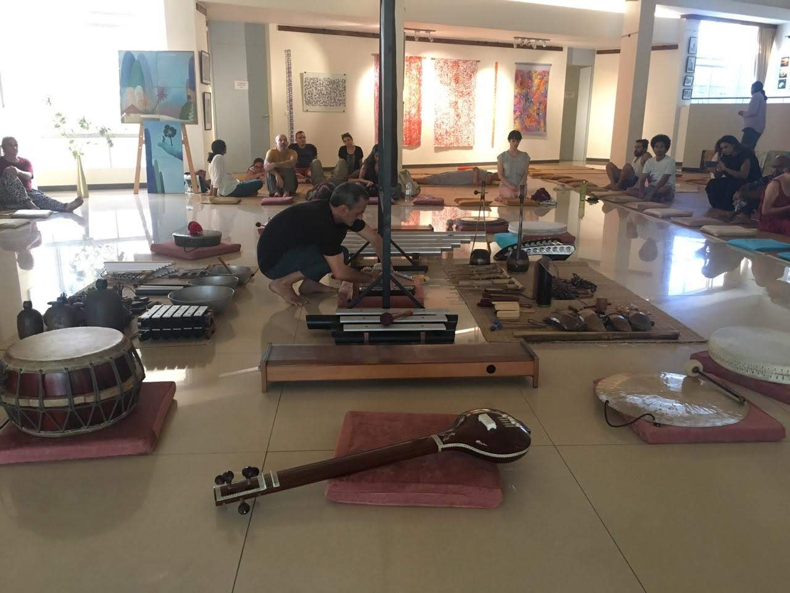
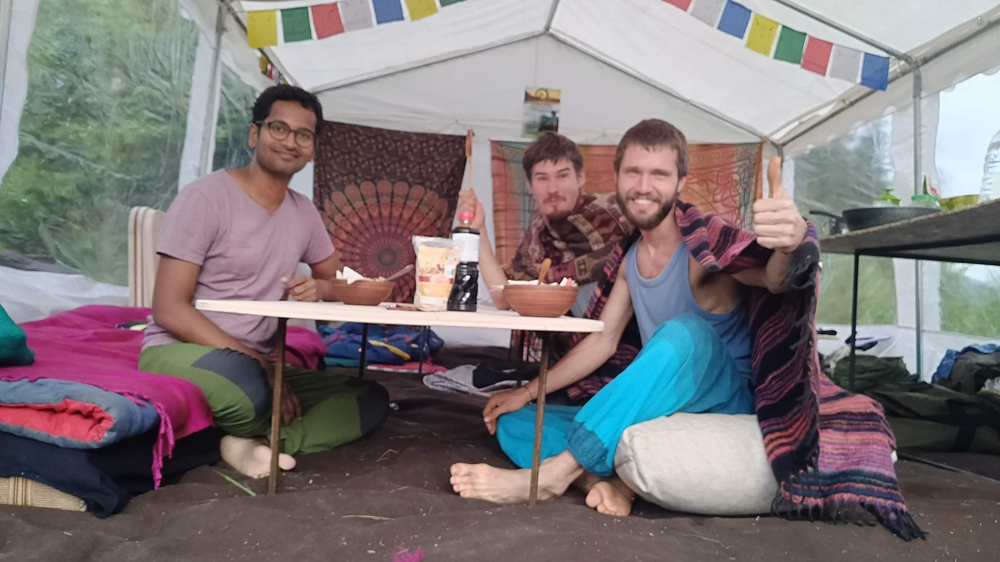
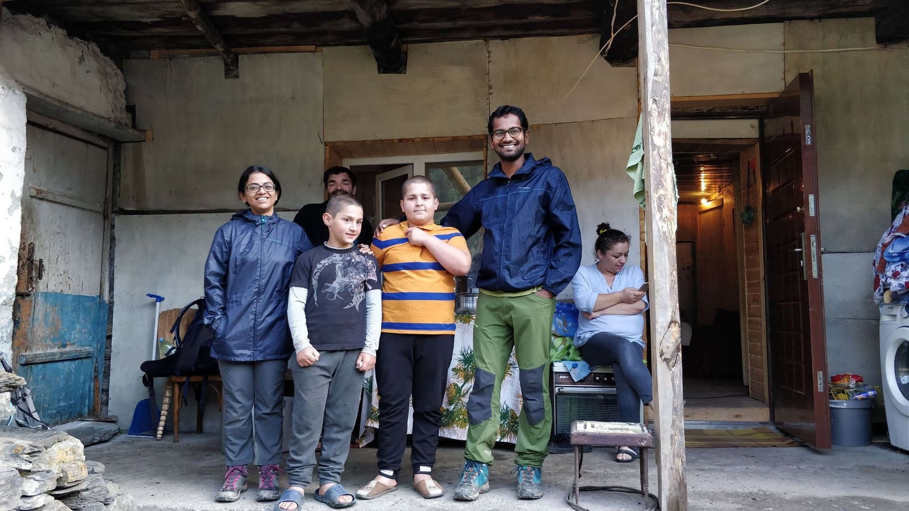

Home
New ventures. Old questions. A quiet obsession with how people live.
Work
Godrej Enterprises — New Ventures + Investments
Back inside a conglomerate. Group-level work: evaluating new businesses, incubating ventures, forging partnerships. A music venture and a fashion venture in motion (under wraps). The wider culture space, on the radar.
Same company, different altitude.
A year of useful detours
Built a full India investment thesis for a VC fund — five emerging shifts, a hypothetical $100M portfolio to make the bets concrete. Token design for Nakamoto Hub, a Bitcoin-secured settlement platform for financial institutions.
Mandala — a blockchain platform for tokenising e-waste. Explored, not pursued. The gestation felt too long for the season I was in.
The work was exploratory. The learning was concrete.
Lomads
Community infrastructure for artists and creators. Started Web2, pivoted to Web3 as the wave hit. Built from Paris. Raised through the Terra-Luna and FTX collapses. Got into Outlier Ventures. Six networks in three months, 60+ orgs in six. Handed over to Blockstart Investments.
Plug into high-signal people. Scope and ship.


Godrej Appliances — Innovation from scratch
Head of Innovation. Set up the function, hired the team, built the methods. Four connected kitchen products — voice control, companion app — in 18 months. $80M+ in projected revenue. $6M secured. Four patents filed. Also ran the group-level IoT platform, with Wipro, TechM, and Capgemini in the room.
The real work wasn't selling ideas. It was helping the organisation recognise itself in the future.


Claro Partners — Barcelona
Reframed P&G's mass fragrance opportunity — from demographics to emotions, unmet needs, and changing lifestyles. Put together an open-source template for building IoT products people might actually want. Framed the proposal that won Claro's largest project to date — Fiat Chrysler's connected car future.
Opportunities are always earlier and stranger than people expect.


Three places, three things that still run underneath everything
Maruti Suzuki in Delhi — first job. Japanese shop-floor discipline, managers on the floor, 5S as a working philosophy. Thales in Paris — masters graduation thesis, applying design thinking to a 70,000-person tech company. Shadowed meetings, ran workshops. Board of Innovation in Antwerp — internship. Framed venture possibilities for Sappi, presented to their management. Watched BoI run venture-building for other clients in parallel.
Operational discipline from Japan. Design methods from France. Venture thinking from Belgium. The stack I still run on.
Explorations
Each place gives me something and stays with me.
I've been deliberate about not letting any single heritage become the default lens. The more different the context, the more it shakes loose what I think I know. Here's a sampling.








Daunting and full of possibility.
Wrote and acted in plays from school days through the engineering years and the first job. Tried improv. The high came from the creation as much as the performance.
Now mostly in the audience. Theatre that's serious, political, or literary — G5A, Prithvi, NCPA. Comedy with teeth. Live music in smaller rooms — fifty to three hundred people, nice and groovy.
First principles, not rules.

I don't follow recipes so much as reason through them — mutton in many variations, ramen built from whatever's in the kitchen, baking and grilling, kept simple and done well. Dishes I understand, not dishes I've perfected by repetition.
The eating works the same way. I order the thing I don't recognise. Curiosity first, always. But the loyalties run deep too — litti chokha non-negotiable in Patna, Hyderabadi mutton biryani, a good sandwich (that takes me to Antwerp), momos done right.
The slow side. Daily attention to living systems.
Fermentation is where it goes deepest. It started professionally — my team at Godrej Appliances was building a fermentation device, I got curious, then went deep. Kanji, kombucha, kefir, ginger bug, sauerkraut, jalapeños in brine. The kefir's been continuous for nearly a year. Every few days: sieve the grains, clean the vessel, start the next batch. Same rhythm with the kombucha SCOBY when I had it.
The garden runs the same logic, made spatial. Brahmi, tulsi, neem, mint, rosemary, New Zealand spinach.
In Public
Stages, conversations, and places where the work has shown up.


About

I grew up in a small town, went to a Ramakrishna Mission boarding school, and learned early that the world was mine to figure out.
Engineering at Delhi College of Engineering, then strategic design at TU Delft. Delft cracked something open.
I've built innovation studios inside conglomerates and a Web3 startup from a Paris apartment. Raised through crypto winters. Shipped products people actually used. Walked away when the chapter was done.
Lived in Delft, The Hague, Antwerp, Barcelona, Paris. Back in Mumbai now — with Subhasree and our two kids.
Most days now: kefir grains kept alive, herbs on the verandah, two small humans, food cooked slow.
I'm drawn to how people live — their rituals, systems, aspirations, and contradictions. The next thing I build will probably sit somewhere between culture, capital, and emerging technology.